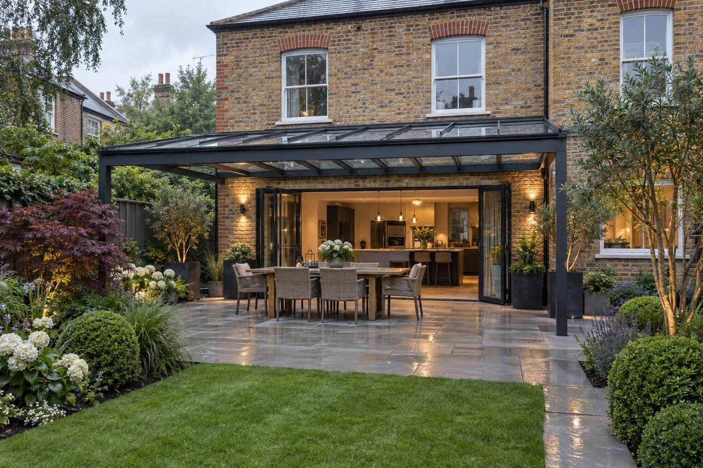

What a glass veranda costs
Guide prices for aluminium and glass verandas in two common sizes, and the extras that sit on top.
Supplied and fitted, an aluminium and glass veranda measuring 4m × 3m usually comes to £9,000–£14,000. A wider 6m × 3m veranda is usually £15,000–£22,000. Side screens, lighting and heaters are priced on top of those figures. The range within each size reflects the roof choice, frame finish and how the veranda fixes to your house. These are guide prices; we give a fixed price in writing after the site visit.
- 4m × 3m, fitted
- £9,000–£14,000
- Includes
- Supply, fitting and clearing up
- Guarantee
- 5 years, in writing
Updated October 2026. Guide prices, not a quote. Your fixed price comes in writing after the site visit.
Aluminium and glass veranda guide prices, supplied and fitted
| Size | Roof area | Guide price |
|---|---|---|
| 4m × 3m | 12m² (4 × 3) | £9,000–£14,000 |
| 6m × 3m | 18m² (6 × 3) | £15,000–£22,000 |
| Side screens | - | Priced on top |
| Lighting and heaters | - | Priced on top |
What is included in the price
The guide prices cover a powder-coated aluminium frame, the clear roof panels, a built-in gutter and downpipe, and fixing to the house with a wall plate and flashing so the join stays watertight.
Side screens, LED lighting and heaters are added to suit how you want to use the space, and each is shown separately on the quote. If the ground where the posts stand is not sound, we allow for footings.
What makes it cost more or less
- Width and projection from the house.
- Glass or polycarbonate roof panels.
- The wall it fixes to: brick, stone or render each need different fixing and flashing.
- Side screens or glass sides to close it in.
- Lighting and heaters.
- What the posts stand on, and whether new footings or a patio are needed.
- Where the downpipe water goes.
Veranda costs in Rutland, Stamford and the nearby towns
Two things move veranda prices locally: the house wall and the planning position. Older homes in Oakham, Uppingham and Ketton are often ironstone or limestone, where the wall plate and flashing need more care than on modern brick. A veranda on a listed house needs consent, and Stamford alone has hundreds of listed buildings. Ground counts too: on Oakham and Market Harborough clay, post footings and the downpipe's water route need designing, while Corby and Kettering new-build gardens can be compacted subsoil that needs digging out for firm footings.
What to check in any quote
- The exact size and whether the roof is glass or polycarbonate.
- How it fixes to the house and how the join is flashed.
- Where the gutter and downpipe discharge.
- Whether planning has been checked against the rear extension limits.
- Which extras are included and which are priced on top.
Glass verandas: how we build it
See glass verandas for the specification, planning rules and the finish we build.
- Glass verandas in Oakham
- Glass verandas in Uppingham
- Glass verandas in Stamford
- Glass verandas in Market Harborough
- Glass verandas in Corby
- Glass verandas in Kettering
- Glass verandas in Ketton
- Glass verandas in Empingham
- Glass verandas in Cottesmore
- Glass verandas in Greetham
- Glass verandas in Langham
- Glass verandas in Whissendine
- Glass verandas in Ryhall
- Glass verandas in Edith Weston
- Glass verandas in Weldon
- Glass verandas in Great Bowden
Rated 5.0 from 37 Google reviews
“Well what can I say about Rutland driveways that would make you seriously consider using them for your project I contacted them had a meeting with the team who was very informative with the level of inspiration I had ideas they had ideas and recommendations we bounced ideas to come up with the best option possible for my …”
Steven · Drive, walkway, patio and garden — Google review
“Had my garden done by the lads at Rutland driveways and landscaping I’m very pleased with the outcome also I booked to get my sisters driveway repaired by the guys would 100% recommend.”
Connor, Corby · Porcelain patio — Google review
Things people ask us
What is the cheapest way to get a veranda?
Is a veranda worth it compared with a conservatory?
What does a veranda cost to look after?
What are the payment terms for a veranda?
How long is a veranda price valid?
Request a site visit
We measure up, check levels and drainage, and send a written proposal with the build-up, the programme and one whole price. No pressure and no follow-up sales calls.